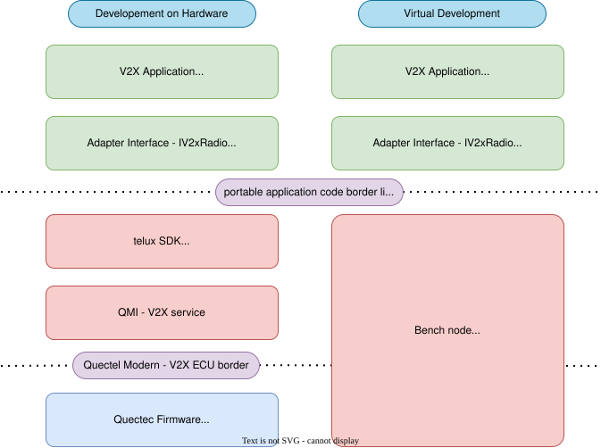
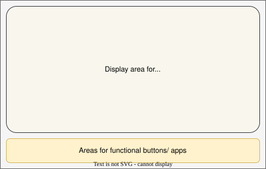
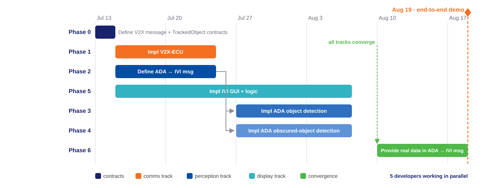

Milestone 1 proposal — FPT Hackathon 2026
Cooperative Vehicle Awareness
See the hazard before it can be seen
02
Project description
the hazard nobody sees coming, and how we make it visible
03
Technical approach
virtual ECUs, cloud environment, responsibilities, extensibility
04
Development process approach
ASPICE-style discipline, agentic AI, parallel tracks
05
Development planning
six phases, five developers, demo on August 19
06
Our perspective
why this proposal
!Pham Ngoc Minh
Pham Ngoc Minh
Team Lead · Project Architect
6 yrs software · 6 yrs telecom
C++ · HMI · Telematics | !Nguyen Danh Quang
Nguyen Danh Quang
Telematics Engineer
6 yrs software · 6 yrs telecom
C++ · Algorithms · Protocols | !Hoang Van Trung
Hoang Van Trung
Computer Vision Engineer
12 yrs software
C++ · CUDA · Python · Model optimization | !Nguyen Tuan Vinh
Nguyen Tuan Vinh
Software Engineer
Fresher
Kotlin · Android | !Vu Xuan Bach
Vu Xuan Bach
Software Engineer
Fresher
Modern C++ |
|---|
Five developers · 24+ combined years across C++, telematics, computer vision, HMI, and Android.
02
Project goals — safer travel, beyond line of sight
The accident nobody sees coming: a vehicle braking two cars ahead is invisible to the following driver and to every onboard sensor — until it is too late.
- Prevent accidents. Vehicles share what they perceive over V2X: a hazard is detected, risk-assessed, and warned seconds before it becomes visible — time to slow down instead of collide.
- Safer travel. Awareness is no longer limited by one vehicle's line of sight — every connected vehicle extends every other's perception.
- Effortless user experience. The hazard appears on the in-vehicle display as an intuitive bird's-eye scene of the road ahead — glance, understand, react. No cryptic alarms, no interpretation.

Convoy geometry — A cannot see C; B sees C and relays it over V2X
Milestone 1 proves it end-to-end: convoy A → B → C. Vehicle A can never see C (blocked by B). B detects C and relays its perception over V2X — C appears on A's display anyway.
03
System design — a full vehicle, fully virtual
The complete E/E architecture runs as virtual ECUs on a cloud platform — no hardware, yet a full-system demonstration.

4-ECU system design
- Blueprint/node model: 1 blueprint = 1 car; 1 node = 1 ECU, packaged as a container — deploying the blueprint brings up the whole virtual vehicle.
- Four cooperating nodes: V2X ECU (communication), ADA ECU (perception + risk), IVI ECU (display), plus a team-built Scenario Player bench node emulating the modem and the world.
- Virtualization fidelity is chosen per node — full vECU for the IVI, app-level Linux containers for V2X/ADA — matching effort to what each ECU must prove.
03
Cloud development environment and starter pack
Development runs entirely on the cloud virtual platform under its blueprint/node model — per node: the virtualization level, the development scope inside it, and the goals to achieve.
| Node | Virtualization level | Focus goals |
|---|
| IVI ECU | Full vECU — developed fully; the container ships in the starter pack | 3D display: god view of the 3 vehicles; 2D ⇄ 3D view switching; switching to another app |
| V2X ECU | App-level (Linux container) — developed in part: only certain layers | Portability to different hardware — the developed layers move across hardware unchanged |
| ADA ECU | App-level (Linux container) — developed fully | Collision Risk Assessment abstraction — identify risk, construct the TrackedObject struct; AI deep learning is not an M1 focus |
| Bench node — Scenario Player | Container — team-built, developed fully | V2X message playback across different scenarios |
03
ECU responsibilities — one clear job each
| Node | Milestone-1 responsibility |
|---|
| V2X ECU | Modem interfacing (simulated); receives V2X payloads, applies business logic, forwards to ADA; builds and broadcasts payloads from ADA data |
| ADA ECU | Detects objects from video, estimates distance, admits tracks; fuses V2X + own perception in a Collision Risk Assessment abstraction; emits warnings to IVI |
| IVI ECU | GUI shell with buttons + central view; renders the 3-vehicle god-view scene, including the occluded "ghost" vehicle, on warning |
| Scenario Player | Bench node: emulates the modem connection point, plays back V2X messages at configurable rates, drives every test scenario |
Track admission is an explicit, testable state machine — no hidden heuristics:

Vehicle C track admission state machine
03
V2X ECU development — hardware portability
- Portable by construction: application + interface layers built on the cloud move to real hardware unchanged — same code, same logic.
- Modem firmware & proprietary layers: simulated by the Scenario Player container.
- Tech stack: C++17 · Vanetza ITS2 codec (ETSI CPM, staged JSON → UPER behind one codec seam) · thin UDP adapter mirroring the production telux API.

V2X software stack
03
ADA ECU development — foundation for future work
- Normalized track store: every data source lands in one store
input data — duplicates dropped, V2X broadcast storms prevented.
- Collision Risk Assessment abstraction: M1's occluded-vehicle logic is the first plugin — future risk modules plugged in without rework.
- Single risk headquarters: all risks fuse into one data struct — one message addresses multiple risks.
- Modular library design: C++ and Python consume the same inputs and produce the same database type, used to construct msg to IVI ECU.
- Tech stack: hybrid C++17 core (store · CRA · warning emission) + Python 3.11 detector subprocess — YOLO11n on ONNX, CPU-only (YOLOX-s fallback) · joined by TrackedObject JSONL over stdout, no FFI · UDP + versioned JSON contracts.

ADA High Level Design
03
IVI ECU development — seamless user experience, instant warning
- Multi-layer, multi-app HMI: the home app owns the frame and buttons and orchestrates the other apps.
- Wake-on-warning: on an obstruction event, a sleeping app wakes and draws the 3-vehicle scene — 2D/3D.
- Tech stack: Kotlin · Jetpack Compose shell · SceneView/Filament 3D + Compose Canvas 2D behind one view seam · UDP foreground service from ADA.

HMI Layout Design on IVI ECU
03
Designed for what comes next
Every ECU boundary is a deliberate extension seam — Milestone 1 ships the scenario, the architecture ships the roadmap:
- V2X ECU — hardware portability. Payload logic lives at the application layer, independent of modem and interface setup: a real C-V2X modem later swaps in without touching the business logic.
- ADA ECU — pluggable warning scenarios. M1's "occluded vehicle" logic is one realization of the shared Collision Risk Assessment abstraction; intersection hazards, curve blind spots, speed-scaled risk plug in as new modules. The warning message is versioned and typed so new hazard types and criticality filtering extend it, not rework it.
- IVI ECU — swappable views. The central view sits behind a binding view-interface seam: 2D today, 3D / live camera feed / multi-app wake-on-warning tomorrow — shell untouched.
Future features are not wishful thinking — they are registered, analysed, and traced to the seams above (§ Future developments): live detection at 120 km/h, multiple hidden obstructions, single-message aggregation, user-opt filtering, themes.
04
Development process approach
04
Development process — ASPICE-style discipline, hackathon speed
We simulate the ASPICE traceability chain end-to-end: requirement ↔ architecture ↔ task ↔ commit ↔ test — every artifact answers "why does this exist?"
- Requirements are engineered: every requirement passes a feasibility study and carries a measurable KPI, (object distance <30m)
- Phases carry contracts: each phase declares its input, its output, and binary acceptance criteria — a phase is done when the check passes and could be demo.
- Total traceability by construction: every task ID
X.Y.Z.W encodes requirement · phase · task · subtask; every commit carries its ID — from any line of code back to the requirement it serves in one hop.
- Atomic units of work: one subtask = one single objective = one atomic commit — reviewable code, manageable change history.
04
Defined output for each phase
Each phase ends demo-ready — demonstration methods follow the jury-preference scores in § System demo requirements.
| Phase | Work | Method to demonstrate |
|---|
| 0 + 1 | Frozen message contracts between nodes; functional Scenario Player + V2X ECU | Wireshark capture — V2X message PDUs correctly sent/received at the V2X ECU interface |
| 2 | Skeleton module code; ADA ↔ IVI message + database schema defined | Build + CI round-trip tests on the frozen contracts (golden vectors) |
| 3 ∥ 4 | ADA object detection; ADA obscured-object detection (V2X fusion) | ADA logs — collision-risk event list; annotated video export (TTC overlay + risk label) |
| 6 | Working HMI on the IVI ECU, driven by mock warnings | 2D/3D god view of the convoy drawn on A's IVI HMI |
| 5 | Integration — real data replaces mocks, all ECUs connected | Whole-project demo: occluded C appears on A's display; Wireshark + ADA event list corroborate |
04
Agentic AI with a human in the loop
AI does the volume; the process keeps it manageable, auditable, and steerable.
- Three specialized agents, non-overlapping mandates: researcher (requirements, feasibility, tech selection) → architect (high-level design, module boundaries) → planner (task decomposition, spawning implementation subagents). Each owns its stage — and explicitly may not do the others'.
- Procedure as code: every working procedure — analysis, design, planning, writing style, commit format — is a versioned rule or skill in the repository, reviewed and evolved like source code.
- Human decision points are built in: every proposed number is marked (A) assumption to confirm; user decisions are logged in a decision register; contracts are ratified by a human at freeze; scope changes are flagged, never silently absorbed.
- Result: AI velocity with audit-grade accountability — every decision has an author, a reason, and a record.
04
Parallel by construction — contracts first, convergence by design
Two contracts are frozen before any implementation: the V2X message schema and the TrackedObject struct — the message formats between the ECUs. Everything downstream builds against them — with mocks — so the following tracks run in parallel:
- Comms track: implement the V2X ECU and the Scenario Player; interface with the ADA ECU.
- Perception track: implement the ADA ECU — detect the obstruction, analyse collision risk; interface with the IVI ECU.
- Display track: bring up the 2D drawing of the 3 vehicles and the collision warning, against a mock message from the ADA ECU.
- The 3 tracks converge: real data replaces mocked data, and all ECUs are connected.
- Payoff: the 1-month timeline holds with slack; teams (and AI subagents) never block on each other's internals.
05
Six phases to August 19 — five developers in parallel
Phase 0 defines the shared contracts, then three tracks launch simultaneously. Phases 1, 2, and 5 start in parallel; the moment phase 2 delivers, phases 3 and 4 develop side by side; every track converges at phase 6 for the end-to-end demo on August 19.

Phase timeline: phases 1, 2, 5 in parallel; 3 and 4 after 2; all converge at phase 6 by Aug 19
- Staffing — five developers in parallel: two on comms (phase 1) · two on perception (phase 2, then 3 ∥ 4) · one on display (phase 5) · all hands on the contracts (phase 0) and phase-6 convergence.
- Convergence window Aug 10–19: mock→real swap, end-to-end rehearsal, recorded demo run.
Thank you!
Cooperative Vehicle Awareness — Milestone 1 · FPT Hackathon 2026
{kind=link}
{kind=link}
{kind=link}
{kind=link}
{kind=link}